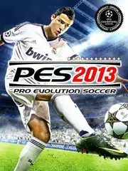

 |
|
| Tiempo de juego | 5m 55s |
| Última actividad | 11/12/2025 23:00:08 |
| Añadido | 11/11/2025 11:01:11 |
| Modificado | 3/12/2025 11:54:42 |
| Estado de finalización | Jugado |
| Librería | Playnite |
| Fuente | |
| Plataforma | PC (Windows) |
| Fecha de lanzamiento | 1/11/2012 |
| Puntuación de la Comunidad | |
| Puntuación de la Crítica | |
| Puntuación de usuario | |
| Género | Sport |
| Desarrollador | |
| Editor | Konami |
| Característica | Single Player |
| Enlaces | |
| Tag | |
"El Rey". "El Pico". "La Perfección".
Esto no es un juego de fútbol. Esto es Pro Evolution Soccer 2013. Para millones, este fue el punto más alto que alcanzó el fútbol virtual. El juego donde Konami agarró todo lo que venía haciendo bien por una década y lo pulió hasta sacarle un brillo perfecto.
Fue el último de su estirpe antes del gran cambio de motor gráfico, y se despidió como un campeón. El gameplay acá era... magia. Rápido, fluido, responsivo. Era el balance perfecto entre arcade y simulación.
El juego que, hasta el día de hoy, una comunidad gigante sigue modeando con los planteles actuales. ¿Por qué? Porque nadie pudo igualar ese "feeling". Legendario.